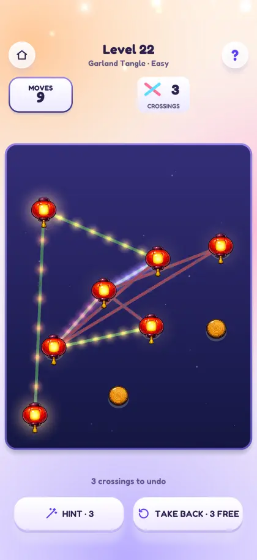

Garland Tangle: the untangle puzzle
By the Sultan of Niyyat team, who make Puzzle Jar. Last updated .
Garland Tangle is the untangle puzzle in Puzzle Jar. Paper lanterns stand on wooden posts, joined by strings of lights. Move a lantern to an empty post, and every string that no longer crosses another one lights up. Light all the strings before your moves run out to win. There is no timer and there are no lives, only a count of moves.

On this page: 13 questions
- How do you play Garland Tangle?
- Why can't I put a lantern anywhere I like?
- How do you win and lose in Garland Tangle?
- How can I tell if two strings really cross?
- What is the best way to untangle the strings?
- Which lantern should I move first?
- What are the steel lanterns?
- What changes when a board has only one empty post?
- What does the ringed lantern and post mean?
- What does a rescue give in Garland Tangle?
- Can I undo a lantern move?
- How hard does Garland Tangle get?
- Is Garland Tangle a good puzzle for adults who like logic?
How do you play Garland Tangle?#
Drag a lantern onto an empty post, or tap the lantern and then the post; either way, that is one move. The strings tied to the lantern follow it. A string that crosses no other string glows in its own color, while a crossed one stays dark on a red cord. The counter at the top shows how many crossings are left to undo.
Why can't I put a lantern anywhere I like?#
Lanterns only sit on posts, and only on empty ones. Most boards have one or two spare posts, so every move is really a choice of which lantern goes to which free post. Moving a lantern also frees the post it came from, and that spot is often exactly where the next lantern needs to go.
How do you win and lose in Garland Tangle?#
You win when every string is lit, meaning no two strings cross anywhere. You lose when the move counter reaches zero with a crossing still on the board. Levels give between 4 and 24 moves, while our solver needs only 1 to 7, so the limit leaves room for some wrong turns.
How can I tell if two strings really cross?#
Look at the cord color: a lit string crosses nothing, a dark one on a red cord crosses at least one other. We also place the posts well apart and never close to the line between two others, so a string never runs over a post it is not tied to. The cord color settles any near-touch for you.
What is the best way to untangle the strings?#
Don't just grab the move that removes the most crossings right now. We tested that greedy approach on every level: it wins most easy boards but none of the hard or boss boards. Instead, picture the finished, uncrossed shape first. Ask which lantern belongs on the outside and which in the middle, then work toward that picture, using the free post as a stepping stone.
Which lantern should I move first?#
Usually the one with the most strings. A lantern tied to three or four others needs a spot that can reach all of them without crossing, and there may be only one such post. A lantern with a single string fits almost anywhere, so place it last. Up to 4 strings can meet at one lantern on later boards.
What are the steel lanterns?#
Nailed lanterns, steel blue with a bolt through them, from level 8. They can't be moved at all. Treat them as fixed points: since the rest of the picture has to fit around them, they often tell you where the other lanterns must end up.
What changes when a board has only one empty post?#
The order of your moves starts to matter a lot. From level 14, medium and harder boards can have just one free post, so each move fills the only gap and opens a new one where the lantern used to be. It plays a little like a sliding puzzle: sometimes you move a lantern out of the way first just to open the right post.
What does the ringed lantern and post mean?#
It rings one lantern and one post: the first move of a short line that untangles the board. The game searches up to 12 moves ahead for it, and if that search comes up empty, it guides lanterns back to where the level's untangled picture has them, which always works. Wait 6 seconds without moving and the move that clears the most crossings is shown for free.
What does a rescue give in Garland Tangle?#
Four more moves, up to twice on a level. The first can be paid for with an optional video, the second with one of your shared rescues.
Can I undo a lantern move?#
Yes. Take back returns the last lantern to its old post and gives you the move back. The first three are free on every level. Trying a move, watching which strings light up, then taking it back is a fair way to explore a tricky board.
How hard does Garland Tangle get?#
Level 1 has 4 lanterns, 3 strings and one crossing, solved in one move out of the 16 it gives, and it can't be lost. Boards grow to 11 posts, 10 lanterns and 13 strings.
Is Garland Tangle a good puzzle for adults who like logic?#
Yes, especially if you enjoy seeing shapes in your head. It grew out of the old Planarity puzzle, where you drag points until no lines cross, which math fans have played for years. Each board is short, a handful of moves, and quiet: you think, move once, and watch the lights come on. It is less suited to anyone who wants fast action.